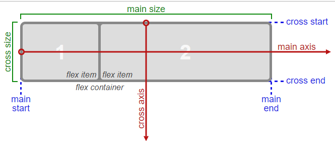

A website's User Interface ("UI") has two components. First, there are the visual elements, such as colors, fonts, and images. Second, there is the placement or positioning of those elements. In Responsive Web Design, a UI layout must accommodate many different browsers and devices accessing the content.
CSS3 introduced Flexible Boxes, or flexbox, to create page layouts for a dynamic UI. It is a layout mode that arranges elements in a predictable way for different screen sizes and browsers. While somewhat new, all popular modern browsers support flexbox. This section covers how to use flexbox and the different layout options it offers.
Placing the CSS property display: flex; on an element allows you to use other flex properties to build a responsive page.
Adding display: flex to an element turns it into a flex container. This makes it possible to align any children of that element into rows or columns. You do this by adding the flex-direction property to the parent item and setting it to row or column. Creating a row will align the children horizontally, and creating a column will align the children vertically.
Other options for flex-direction are row-reverse and column-reverse. Note: The default value for the flex-direction property is row.
The last two challenges used the flex-direction property set to row. This property can also create a column by vertically stacking the children of a flex container.
Sometimes the flex items within a flex container do not fill all the space in the container. It is common to want to tell CSS how to align and space out the flex items a certain way. Fortunately, the justify-content property has several options to do this.
Recall that setting a flex container as a row places the flex items side-by-side from left-to-right. A flex container set as a column places the flex items in a vertical stack from top-to-bottom.
For each, the direction the flex items are arranged is called the main axis. For a row, this is a horizontal line that cuts through each item. And for a column, the main axis is a vertical line through the items.
The align-items property is similar to justify-content. Recall that the justify-content property aligned flex items along the main axis. For rows, the main axis is a horizontal line and for columns it is a vertical line.
Flex containers also have a cross axis which is the opposite of the main axis. For rows, the cross axis is vertical and for columns, the cross axis is horizontal.
CSS offers the align-items property to align flex items along the cross axis. For a row, it tells CSS how to push the items in the entire row up or down within the container. And for a column, how to push all the items left or right within the container.
The different values available for align-items include
stretch the items to fill the flex container. For example, rows items are stretched to fill the flex container top-to-bottom. This is the default value if no align-items value is specified.
align items to their baselines. Baseline is a text concept, think of it as the line that the letters sit on.